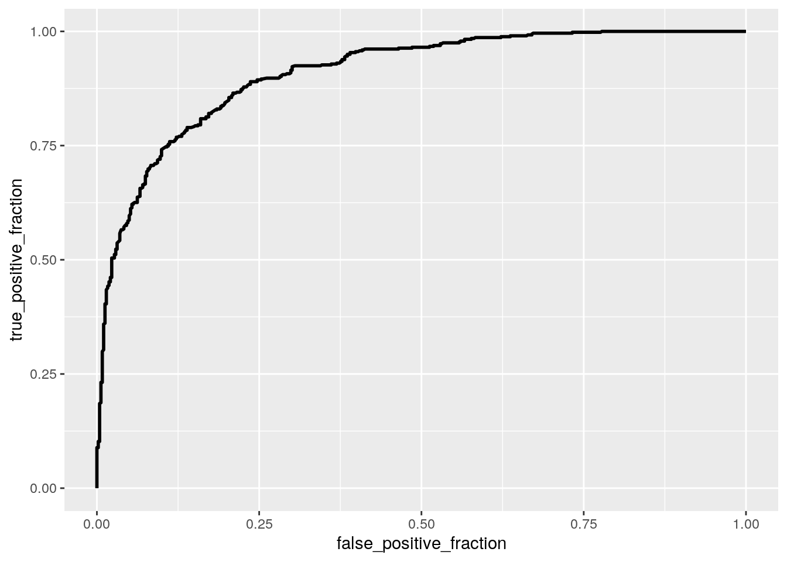

In the fall, I will be pursuing a master’s in social work, and one of the main aspects in the field is looking at inequalities that are prevelant in society today. Decades of research have been done to understand the research inequality that prevails our country today. This dataset looks at a student’s test performance. The categorical variables include a student’s gender (‘gender’) and whether or not they had completed a test preparation course (‘test preparation score’) which will be indicated by ‘completed’, or ‘not completed’. The numeric variables include, ‘math score, ’reading score’ and ‘writing score’ which measures how well a student scored on these test sections. There are a total of 189 observations for each of the variables.
library(tidyverse)## ── Attaching packages ─────────────────────────────────────── tidyverse 1.3.0 ──## ✓ ggplot2 3.3.3 ✓ purrr 0.3.4
## ✓ tibble 3.0.4 ✓ dplyr 1.0.2
## ✓ tidyr 1.1.2 ✓ stringr 1.4.0
## ✓ readr 1.4.0 ✓ forcats 0.5.0## ── Conflicts ────────────────────────────────────────── tidyverse_conflicts() ──
## x dplyr::filter() masks stats::filter()
## x dplyr::lag() masks stats::lag()#Loading our dataset into R studio
student <- read_csv("StudentsPerformance.csv")##
## ── Column specification ────────────────────────────────────────────────────────
## cols(
## gender = col_character(),
## `race/ethnicity` = col_character(),
## `parental level of education` = col_character(),
## lunch = col_character(),
## `test preparation course` = col_character(),
## `math score` = col_double(),
## `reading score` = col_double(),
## `writing score` = col_double()
## )#Selecting the main variables to focus on
student <- student %>% select(gender, `test preparation course`, `math score`, `reading score`, `writing score`)
#Renaming the variables
names(student)[names(student) == "test preparation course"] <- "test"
names(student)[names(student) == "math score"] <- "math"
names(student)[names(student) == "reading score"] <- "reading"
names(student)[names(student) == "writing score"] <- "writing"
#Set the variable 'gender' as a binary variable.
student1 <- student %>% mutate(y=ifelse(gender=="female",1,0))
student1$gender <- factor(student1$gender,levels=c("female", "male"))A MANOVA test was conducted in order to see if math, reading and writing scores show a mean difference across gender. The null hypothesis will suggest that all the means of the three groups (math, reading, writing) are equal, whereas the alternative hypothesis suggests that at least one of these three groups’ mean will differ. We find the p-value is significant (2.2e-16) and say that one of the response variables differ. A univariate ANOVA was conducted and suggests that all three resopnse variables are significant. Post-hoc tests were conducted and in total, 116 tests were conducted, which included 1 MANOVA test, 3 ANOVA tests, and 112 t-tests. The probability of at least one type I error is 0.996 and after adjusting it (bonferroni correction) it is now 0.00043. Most likely the MANOVA assumptions were not met because this data was most likely not randomly collected.
#A MANOVA test was conducted to determine if math, reading and writing scores show a mean difference across gender.
man1 <- manova(cbind(math, reading, writing)~test, data=student)
summary(man1)## Df Pillai approx F num Df den Df Pr(>F)
## test 1 0.13953 53.833 3 996 < 2.2e-16 ***
## Residuals 998
## ---
## Signif. codes: 0 '***' 0.001 '**' 0.01 '*' 0.05 '.' 0.1 ' ' 1#Univariate ANOVAs tests were ran due to the significance of the MANOVA test
summary.aov(man1)## Response math :
## Df Sum Sq Mean Sq F value Pr(>F)
## test 1 7253 7253.2 32.543 1.536e-08 ***
## Residuals 998 222436 222.9
## ---
## Signif. codes: 0 '***' 0.001 '**' 0.01 '*' 0.05 '.' 0.1 ' ' 1
##
## Response reading :
## Df Sum Sq Mean Sq F value Pr(>F)
## test 1 12449 12448.7 61.963 9.082e-15 ***
## Residuals 998 200504 200.9
## ---
## Signif. codes: 0 '***' 0.001 '**' 0.01 '*' 0.05 '.' 0.1 ' ' 1
##
## Response writing :
## Df Sum Sq Mean Sq F value Pr(>F)
## test 1 22591 22591.4 108.35 < 2.2e-16 ***
## Residuals 998 208086 208.5
## ---
## Signif. codes: 0 '***' 0.001 '**' 0.01 '*' 0.05 '.' 0.1 ' ' 1#Post-hoc tests was conducted
pairwise.t.test(student$math, student$test, p.adj="none")##
## Pairwise comparisons using t tests with pooled SD
##
## data: student$math and student$test
##
## completed
## none 1.5e-08
##
## P value adjustment method: nonepairwise.t.test(student$reading, student$test, p.adj="none")##
## Pairwise comparisons using t tests with pooled SD
##
## data: student$reading and student$test
##
## completed
## none 9.1e-15
##
## P value adjustment method: nonepairwise.t.test(student$writing, student$test, p.adj="none")##
## Pairwise comparisons using t tests with pooled SD
##
## data: student$writing and student$test
##
## completed
## none <2e-16
##
## P value adjustment method: none#Calculating the probability of atleast one type I error
Type1ErrorCount <- replicate(5000,{
pvals<-NULL
for(i in 1:112){
samp1 <- rnorm(20, mean=0)
samp2 <- rnorm(20, mean=0)
pvals[i] <- t.test(samp1, samp2, var.eq=T)$p.val
}
sum(pvals<.05)
})
mean(Type1ErrorCount>0)## [1] 0.9966#Adjusting the signficance level
0.05/116## [1] 0.0004310345A two-sample t-test was conducted in order to see if there was a mean difference in math scores between gender (male and female). The null hypothesis is that the math score difference between gender is a value of 0. The alternative hypothesis is that there is a difference in math score between gender other than 0. The test was conducted, and we found that there is a signficance in the results because the p-value is 8.24e-08. This means that the null hypothesis is rejected and that there is a difference in scores between genders.
#A randomization test was conducted to find the mean difference
t.test(data=student1, math ~ y)##
## Welch Two Sample t-test
##
## data: math by y
## t = 5.398, df = 997.98, p-value = 8.421e-08
## alternative hypothesis: true difference in means is not equal to 0
## 95 percent confidence interval:
## 3.242813 6.947209
## sample estimates:
## mean in group 0 mean in group 1
## 68.72822 63.63320#A plot was created to visualize the results
ggplot(student1, aes(math,fill=y)) + geom_histogram(bins=4) + facet_wrap(~y) + theme(legend.position="none")The predicted reading score of a female student with a math score of 0 is predicted to be at a value of 5.51. The score of male students with a math score of 0 is predicted to score 11.48 less than female students with a math score of 0.
The proportion of the variation in the outcome is explained by the model of a value of 0.8184. When checking the assumptions of linearity, normality and homoskedasticity, we find that the assumptions seem to be good and passes. This is because the residuals look normally scattered and distributed. Whereas, looking at normality with the histogram, there seems to be a normal distribution. When recomputing the regression results with robust standard errors via coeftest, we find that there is an increase of standard error resulting in a larger p-value and smaller t-statistic.
student1$reading_c <- student1$reading - mean(student1$reading)
student1$math_c <- student1$math - mean(student1$math)
fit <- lm(reading_c~gender*math_c, data=student1)
summary(fit)##
## Call:
## lm(formula = reading_c ~ gender * math_c, data = student1)
##
## Residuals:
## Min 1Q Median 3Q Max
## -19.2390 -4.2298 0.1665 4.3036 19.1831
##
## Coefficients:
## Estimate Std. Error t value Pr(>|t|)
## (Intercept) 5.51159 0.27722 19.88 <2e-16 ***
## gendermale -11.47547 0.40017 -28.68 <2e-16 ***
## math_c 0.84392 0.01769 47.70 <2e-16 ***
## gendermale:math_c 0.01539 0.02655 0.58 0.562
## ---
## Signif. codes: 0 '***' 0.001 '**' 0.01 '*' 0.05 '.' 0.1 ' ' 1
##
## Residual standard error: 6.231 on 996 degrees of freedom
## Multiple R-squared: 0.8184, Adjusted R-squared: 0.8178
## F-statistic: 1496 on 3 and 996 DF, p-value: < 2.2e-16#A regression plot was created to visualize the interaction
ggplot(student1, aes(reading_c, math_c, color=gender)) +geom_smooth(methods="lm")## Warning: Ignoring unknown parameters: methods## `geom_smooth()` using method = 'loess' and formula 'y ~ x'#Linearity and homoskedasticity was checked
resid <-fit$residuals; fitvals<-fit$fitted.values
ggplot() + geom_point(aes(fitvals,resid)) + geom_hline(yintercept=0, col="red")#Normality was checked
ggplot() + geom_histogram(aes(resid), bins=25)#Looked at uncorrected SEs
library(sandwich); library(lmtest)## Loading required package: zoo##
## Attaching package: 'zoo'## The following objects are masked from 'package:base':
##
## as.Date, as.Date.numericsummary(fit)$coef[,1:2]## Estimate Std. Error
## (Intercept) 5.51159180 0.27721852
## gendermale -11.47546538 0.40017486
## math_c 0.84391547 0.01769090
## gendermale:math_c 0.01539382 0.02654545#Looked at corrected SEs
coeftest(fit, vcov=vcovHC(fit))[,1:2]## Estimate Std. Error
## (Intercept) 5.51159180 0.26204762
## gendermale -11.47546538 0.40269335
## math_c 0.84391547 0.01640411
## gendermale:math_c 0.01539382 0.02662458Unforunately, I was not able to knit the results due to an error when knitting, so the code had to be deleted, but my standard error did change in comparison to the original and robust standard errors. Sorry about this.
fit <- lm(reading_c~gender*math_c, data=student1)
res1 <- fit$residuals
fittedvalues <- fit$fitted.valuesBy controlling for the student’s writing score, for every 1 point increase in a student’s reading score, the odds of it being male or female change by a factor of -0.074317. By controlling the reading score, for every 1 point increase in a student’s writing score, the odds of it being male or female change by a factor of 0.112474.
Looking at the accuracy value of 0.823 helps us to determine the proportion of correctly classified outcomes of students. The TPR value (the true positive rate) is 0.8170478, which is the proportion of male students correctly classified. The TNR value (true negative rate) is 0.8285164 is the probability of female students correctly classified. The PPV (the positive predicted value) is the proportion of classified males who actually are males. The AUC value is .9096189, which can be considered great. After generating a ROC curve/plot, the AUC comes out to be at a value of .9096189, which the value is considered great.
library(plotROC)
#A logistic regression model
fit1 <- glm(y~reading_c+math_c, data=student1, family="binomial")
coeftest(fit1)##
## z test of coefficients:
##
## Estimate Std. Error z value Pr(>|z|)
## (Intercept) 0.104258 0.090906 1.1469 0.2514
## reading_c 0.306828 0.019224 15.9605 <2e-16 ***
## math_c -0.285003 0.018055 -15.7855 <2e-16 ***
## ---
## Signif. codes: 0 '***' 0.001 '**' 0.01 '*' 0.05 '.' 0.1 ' ' 1#Created a confusion matrix
prob <- predict(fit1, type="response")
table(predict=as.numeric(prob>.5), truth=student1$y)%>%addmargins## truth
## predict 0 1 Sum
## 0 393 88 481
## 1 89 430 519
## Sum 482 518 1000#Accuracy
((393+430)/1000)## [1] 0.823#TPR
393/481## [1] 0.8170478#TNR
430/519## [1] 0.8285164#PPV
393/482## [1] 0.8153527#AUC
class_diag(prob, student1$y)## acc sens spec ppv auc
## 1 0.823 0.8301158 0.8153527 0.8285164 0.9096189#A density plot was created to visualize the results
student1$logit <- predict(fit1,type = "link")
student1 %>% mutate(y=as.factor(y)) %>% ggplot(aes(logit, color=y, fill=y)) +geom_density(alpha=.5) + geom_vline(xintercept=0) + xlab("predictor(logit)")#An ROC curve was created to visualize
ROC <-ggplot(student1)+ geom_roc(aes(d=y, m=prob), n.cuts=0)
ROC
#AUC was calculated
calc_auc(ROC)## PANEL group AUC
## 1 1 -1 0.9096189Looking at the accuracy value of 0.664 helps us to determine the proportion of correctly classified outcomes of students. The TPR value (the true positive rate) is 0.8301158, which is the proportion of male students correctly classified. The TNR value (true negative rate) is 0.8153527 is the probability of female students correctly classified. The PPV (the positive predicted value) is the proportion of classified males who actually are males. The AUC value is 0.9096189, which can be considered great. After generating a ROC curve/plot, the AUC comes out to be at a value of 0.9096189, which the value is considered great. When calculating the out-of-sample classification, the AUC came out to be at a value of 0.9601502, which is higher than the in-sample calculation, and is considered to be great. After conducting a LASSO, the ‘test’, ‘math’, ‘reading’ and ‘writing’ variables were retained. After conducting a 10-fold CV using the variables lasso selected, the model’s out-of-sample AUC is 0.9160367, which in comparison is about the same value to the logistic regression’s AUC value of 0.9096189.
student2 <- student1 %>%select(test, math, reading, writing, y)
#A logistic regression model was created
fit2 <- glm(y~., data=student2, family="binomial")
coeftest(fit2)##
## z test of coefficients:
##
## Estimate Std. Error z value Pr(>|z|)
## (Intercept) -5.546421 0.717147 -7.7340 1.042e-14 ***
## testnone 2.366934 0.296287 7.9886 1.364e-15 ***
## math -0.422531 0.028405 -14.8752 < 2.2e-16 ***
## reading 0.031369 0.028371 1.1057 0.2689
## writing 0.438837 0.037790 11.6126 < 2.2e-16 ***
## ---
## Signif. codes: 0 '***' 0.001 '**' 0.01 '*' 0.05 '.' 0.1 ' ' 1prob1 <- predict(fit2, type="response")
#Computing in-sample classification diagnostics
class_diag(prob,student2$y)## acc sens spec ppv auc
## 1 0.823 0.8301158 0.8153527 0.8285164 0.9096189#A 10-fold CV was performed
set.seed(1234)
k=10
data<-student2[sample(nrow(student2)),]
fold<-cut(seq(1:nrow(student2)), breaks=k, labels=FALSE)
diags<-NULL
for(i in 1:k){
train<-data[fold!=i,]
tests<-data[fold==i,]
truth<-tests$y
fit<-glm(y~., data=student2,family="binomial")
probp<-predict(fit,newdata=tests, type="response")
diags<-rbind(diags,class_diag(probp,truth))
}
#Computing out-of-sample classification diagnostics
summarize_all(diags,mean)## acc sens spec ppv auc
## 1 0.887 0.8950802 0.8765691 0.8893237 0.9601502#Grab Response/Predictor
library(glmnet)## Loading required package: Matrix##
## Attaching package: 'Matrix'## The following objects are masked from 'package:tidyr':
##
## expand, pack, unpack## Loaded glmnet 4.0-2y<-as.matrix(student2$y)
x<-model.matrix(y~., data=student2)[,-1]
head(x)## testnone math reading writing
## 1 1 72 72 74
## 2 0 69 90 88
## 3 1 90 95 93
## 4 1 47 57 44
## 5 1 76 78 75
## 6 1 71 83 78cvs <-cv.glmnet(x, y, family="binomial")
#Lasso was conducted
lassos <-glmnet(x, y, family="binomial", lambda=cvs$lambda.1se)
coef(lassos)## 5 x 1 sparse Matrix of class "dgCMatrix"
## s0
## (Intercept) -3.297672242
## testnone 1.326575217
## math -0.266918598
## reading 0.006527403
## writing 0.289774252#A 10-fold CV test was conducted on LASSO
set.seed(1234)
k=10
data<-student2%>%sample_frac
fold1<-ntile(1:nrow(data),n=10)
diags<-NULL
for(i in 1:k){
train<-data[fold1!=i,]
test<-data[fold1==i,]
truth<-test$y
fit<-glm(y~test+math+reading,
data=train, family="binomial")
prob1<-predict(fit, newdata=test, type="response")
diags<-rbind(diags,class_diag(prob1,truth))
}
diags%>%summarize_all(mean)## acc sens spec ppv auc
## 1 0.828 0.8352537 0.8192031 0.8340442 0.9160367